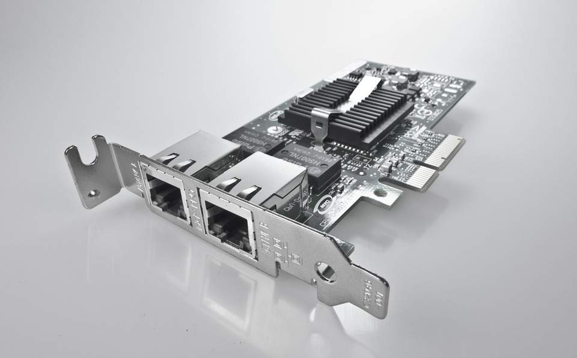

If your motherboard didn’t come with a network adapter, here are several features to consider when buying one.
Network adapters are inexpensive, but important to have in your computer. Here are some possible features to consider when buying one:
Most motherboards already come with a network card built in. If that is the case, you are good to go. If not you should buy one. Fortunately they don’t cost much.
There are two features on most network adapters: A wired Ethernet connection and wireless. If you are close to your Internet source, make sure you have an Ethernet port. This way you will never have an issue if your wireless is malfunctioning.
If you need wireless to connect your computer, make sure the feature is a part of the network card you buy. There are different speeds and specifications for wireless, so make sure you get what will work well for you.
Some network adapters include bluetooth. These can be useful, but buying a separate USB bluetooth adapter is very cheap, so no need to make this a reason to buy one card over another.